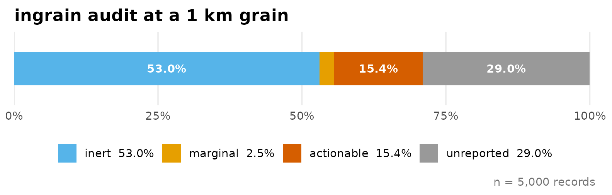
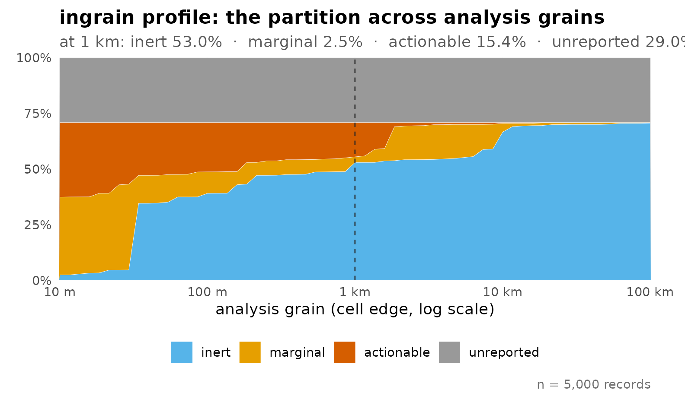
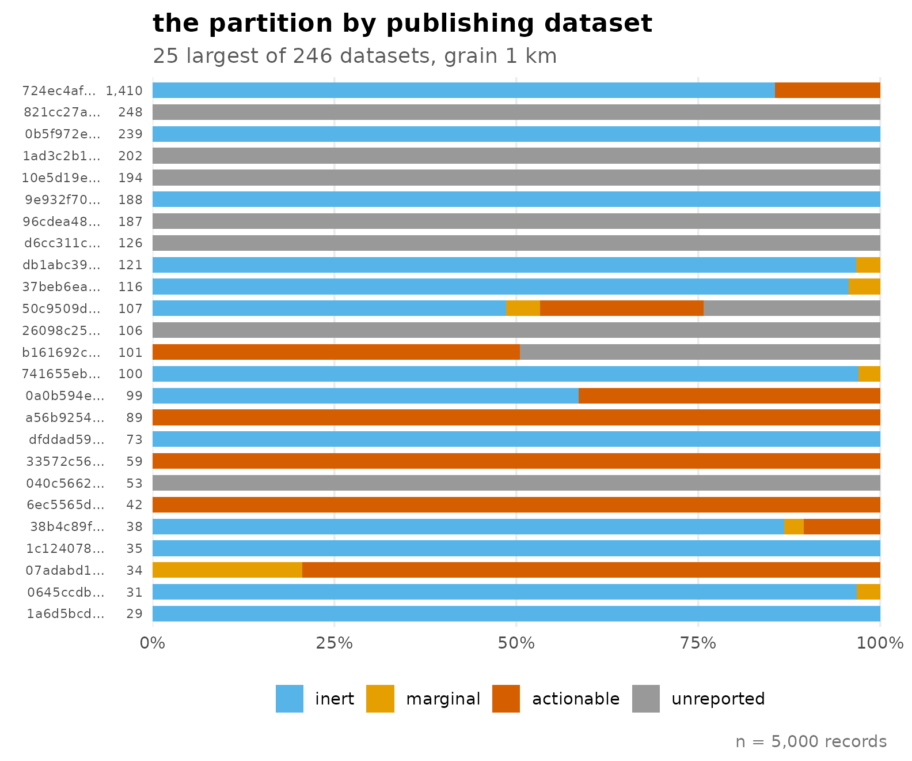

The question the audit answers
A GBIF download carries a per-record positional uncertainty radius,
coordinateUncertaintyInMeters, reported for some records
and missing for others. Coordinate-cleaning tools flag impossible and
suspicious coordinates; what they do not say is what the reported
uncertainty means for the analysis you are about to run. A
widespread workflow idiom keeps records whose radius is below a
threshold or missing, and drops the rest – a filter that
selects on which publishers reported metadata, not on where the
organisms were.
ingrain asks a different question, record by record:
at your analysis resolution, can an uncertainty-aware treatment
act on this record at all? For a raster with cell edge length
R and a reported radius r, every record lands in one
of four states:
- inert (r ≤ R/2) – the uncertainty disc fits within one cell, so corrections cannot meaningfully act; the covariate is effectively constant over the region the record could occupy.
- marginal (R/2 < r ≤ 3R) – the boundary band, where the effect of positional error depends on where the record sits relative to cell edges and on local covariate variation.
- actionable (r > 3R) – the uncertainty region spans many cells; treatments have room to act, and the choice among them has consequences.
-
unreported (r is
NA) – no treatment can act, and the radius cannot be recovered from the coordinates themselves.
One grain
The bundled crayfish sample is a fixed 5,000-record draw
from a real GBIF download (see the data note at the end). At a
conventional 1 km grain:
a <- ingrain(crayfish, grain = 1000)
a
#> -- ingrain audit -- 5,000 records, grain 1,000 m --
#> inert 53.0% (n = 2,652)
#> marginal 2.5% (n = 126)
#> actionable 15.4% (n = 772)
#> unreported 29.0% (n = 1,450)
autoplot(a)
More than half of these records are inert: whatever the merits of the
available treatments, they cannot change the model for those records
at this resolution. Hefley et al. (2017) observed in passing that a
change-of-support correction cannot act where the covariate is constant
within a grid cell; the inert state turns that observation
into a per-record screen, run before any model is fitted.
The grain is a choice
The partition is not a property of the data alone – it is a property of the data and the resolution. Sweeping the grain makes that explicit:
p <- ingrain_profile(crayfish, mark = 1000)
p
#> -- ingrain profile -- 5,000 records, 61 grains from 10 m to 100 km --
#> at 1 km: inert 53.0% | marginal 2.5% | actionable 15.4% | unreported 29.0%
autoplot(p)
As the grain coarsens, records migrate from actionable into inert; the treatment debate concerns a shrinking share of the data – a statement about correctability, not harm: coarsening the grain does not by itself overcome positional error (Gábor et al. 2022); what shrinks is the share of records on which an uncertainty-aware treatment has room to act. The grey band does not move: no choice of resolution touches the unreported share. The steps in the coloured bands are real, not artefacts – reported radii concentrate on a handful of mass points – 15 m, 5 km, 500 m and 100 m, plus two grid half-diagonals, 70.7 m (= 50sqrt(2), half the diagonal of a 100-m grid square) and 3,535 m (= 2,500sqrt(2), of a 5-km square) – and the classification thresholds cross those mass points as the grain sweeps.
Publishers, not organisms
Cutting the same audit by publishing dataset shows where the partition comes from:
bd <- by_dataset(a)
bd
#> -- ingrain datasets -- 246 of 246 datasets (min_n = 1), grain 1 km --
#> dataset n inert marginal actionable unreported
#> 724ec4af-c... 1,410 85.5% 0.0% 14.5% 0.0%
#> 821cc27a-e... 248 0.0% 0.0% 0.0% 100.0%
#> 0b5f972e-0... 239 100.0% 0.0% 0.0% 0.0%
#> 1ad3c2b1-0... 202 0.0% 0.0% 0.0% 100.0%
#> 10e5d19e-4... 194 0.0% 0.0% 0.0% 100.0%
#> 9e932f70-0... 188 100.0% 0.0% 0.0% 0.0%
#> 96cdea48-b... 187 0.0% 0.0% 0.0% 100.0%
#> d6cc311c-c... 126 0.0% 0.0% 0.0% 100.0%
#> db1abc39-7... 121 96.7% 3.3% 0.0% 0.0%
#> 37beb6ea-e... 116 95.7% 4.3% 0.0% 0.0%
#> ... and 236 more datasets
autoplot(bd)
Most datasets sit almost entirely in a single state – publishers occupy regimes, not a gradient. The uncertainty coefficient quantifies this: how much does knowing the dataset reduce your uncertainty about a record’s state?
ingrain_u(a, seed = 1)
#> -- ingrain U -- how much the dataset determines the state --
#> U = 0.797 (0 = dataset tells you nothing, 1 = everything)
#> permutation null (B = 200): mean 0.059 (sd 0.003)
#> excess over null = 0.738 p = 0.0050
#> 5,000 records across 246 datasetsRead against its permutation null, the excess is what survives having many groups. The practical consequence: you cannot predict the partition of your own download from the taxon; datasets within one taxon differ as much as taxa do. Audit your download, not your organism.
What to do with each state
- inert – use the records as they are, at this grain. Corrections cannot act on them; discarding them for their radius would be pure loss.
- marginal – treat as a sensitivity band: small changes of grain move these records across the boundary, so check that conclusions do not hinge on them.
-
actionable – this is where method choice matters.
Options include threshold filtering, the near-geographic and
near-environmental point methods of Smith et al. (2023) implemented in
enmSdmX, and change-of-support estimation (Hefley et al. 2017). - unreported – do not impute a radius from coordinate decimal places: decimals bound the uncertainty only from below, so they cannot supply the missing upper bound. For records with gridded coordinates – a substantial share of GBIF (Feng et al. 2024) – GridDER can recover a grid-implied radius; for the rest, the missing radius is irreducible, and the honest options are to analyse with and without these records or to model reporting explicitly.
What ingrain is not
ingrain deliberately performs no cleaning, no imputation
and no estimation of radii. Run coordinate cleaning first (e.g.
CoordinateCleaner, Zizka et al. 2019; bdc, Ribeiro et al. 2022), then
the audit, then whatever treatment the actionable share justifies.
A note on the bundled data
crayfish is drawn from GBIF occurrence download doi:10.15468/dl.99ezk2 and
restricted to CC0/CC BY records so it can be redistributed; the sample
is registered as GBIF derived dataset doi:10.15468/dd.d9xgfc,
which credits all 246 contributing datasets. Because record licences are
set by the publishing dataset, that restriction is itself a publisher
filter, and the shares above differ by construction from the unfiltered
download. The sample demonstrates the mechanics; audit your own download
for your own numbers.
References
Feng, X., Rocha, T., Thammavong, H.T., Tulaiha, R., Chen, X., Xie, Y. & Park, D.S. (2024) GridDER: Grid Detection and Evaluation in R. Ecological Informatics.
Gábor, L., et al. (2022) Positional errors in species distribution modelling are not overcome by the coarser grains of analysis. Methods in Ecology and Evolution, 13.
Hefley, T.J., Brost, B.M. & Hooten, M.B. (2017) Bias correction of bounded location errors in presence-only data. Methods in Ecology and Evolution, 8, 1566–1573.
Marcer, A., et al. (2021) Quality issues in georeferencing: from physical collections to digital data repositories for ecological research. Diversity and Distributions, 27, 564–567.
Marcer, A., et al. (2022) Uncertainty matters: ascertaining where specimens in natural history collections come from and its implications for predicting species distributions. Ecography, 2022, e06025.
Moudrý, V., et al. (2024) Optimising occurrence data in species distribution models. Ecography, 2024, e07294.
Ribeiro, B.R., et al. (2022) bdc: A toolkit for standardizing, integrating and cleaning biodiversity data. Methods in Ecology and Evolution, 13, 1421–1428.
Smith, A.B., Murphy, S.J., Henderson, D. & Erickson, K.D. (2023) Including imprecisely georeferenced specimens improves accuracy of species distribution models and estimates of niche breadth. Global Ecology and Biogeography, 32, 342–355.
Zizka, A., et al. (2019) CoordinateCleaner: Standardized cleaning of occurrence records from biological collection databases. Methods in Ecology and Evolution, 10, 744–751.